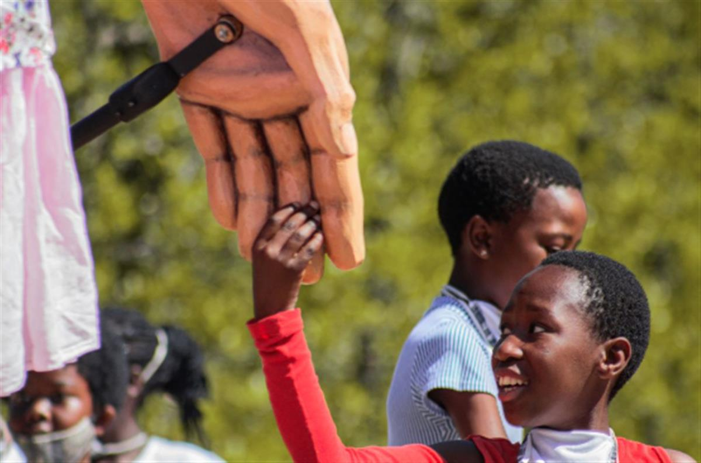
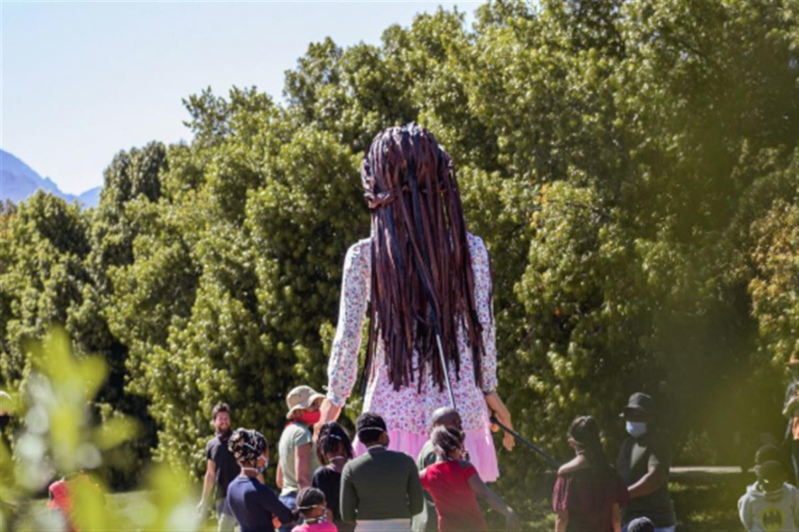
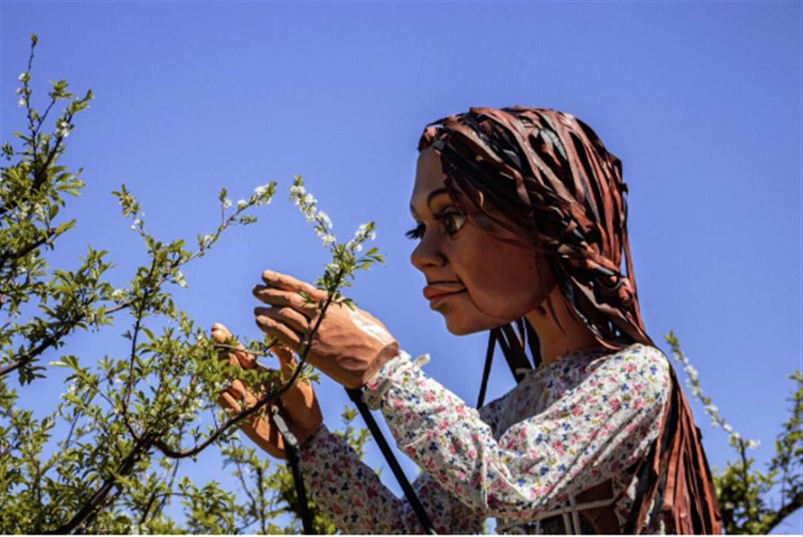

Good Chance theater company, The Walk, featuring the Little Amal puppet created by Handspring Puppet Company, as seen in London. Photo by Nick Wall, courtesy of Good Chance theater company.
Good Chance theater company, The Walk, featuring the Little Amal puppet created by Handspring Puppet Company, as seen in London. Photo by Nick Wall, courtesy of Good Chance theater company.
A 12-Foot Puppet of a Syrian Girl Will Travel 5,000 Miles This Summer as Part of a Wildly Ambitious Art Project About the Plight of Refugees
Little Amal will celebrate her 10th birthday at the V&A museum in London.
Sarah Cascone, May 11, 2021
A giant puppet of a young Syrian girl will travel nearly 5,000 miles this summer in an intercontinental public art project from London’s Good Chance theater company.
The Walk, as the project is called, kicks off at the Syria-Turkey border on July 27. The puppet, christened Little Amal (her name means hope), will make her way across Europe, through Turkey, Greece, Italy, Switzerland, France, and Belgium before ending her journey in the UK on November 3.
Little Amal is nine years old, but stands nearly 11-and-a-half feet tall. Searching for her mother, she represents all displaced children, especially those separated from their families. UNICEF estimates that there are over 30 million forcibly displaced children worldwide.
The hope is that The Walk—which was delayed by the pandemic, just as refugees found themselves stranded due to health-related travel restrictions—will “rewrite the narrative about refugees,” Good Chance producer Tracey Seaward told Al Jazeera.
Good Chance theater company, The Walk, featuring the Little Amal puppet created by Handspring Puppet Company, as seen in London. Photo by Nick Wall, courtesy of Good Chance theater company.
“The Walk is there to celebrate the potential of refugees, children, grownups. It is not a march of misery, it is a march of pride,” Amir Nizar Zuabi, Good Chance’s artistic director, told the Guardian. “We hope this corridor of friendship will last much longer than the actual 12-week journey. It will become a network of collaborations in the future.”
The articulated Little Amal figure is the work of South Africa’s Handspring Puppet Company, which made the puppets for the play War Horse, a hit at London’s National Theatre and West End from 2007 to 2016 and on Broadway in New York from 2011 to 2013.
“Many children will make puppets of their own to welcome Little Amal when she arrives in town, creating a huge empathetic exchange between the giant puppet and the little puppets made across Europe,” Handspring founders Adrian Kohler and Basil Jones told Atlas of the Future, “
Little Amal is made from cane and carbon fiber and requires four puppeteers to operate: one inside on stilts controlling her facial movements, one for each arm, and one to support her back.
Her 70-stop trip will include more than 80 free events staged in collaboration with some 250 partnering artists and organizations. Amal will befriend a minotaur in Athens after leaving a trail of yarn through the city’s labyrinthine streets, dance with hundreds of performers after throwing a fit in Naples, and eat apple pie with the elderly in Cologne.

Good Chance theater company, The Walk, featuring the Little Amal puppet created by Handspring Puppet Company, as seen in Cape Town. Photo by Bevan Roos, courtesy of Good Chance theater company.Other stops will include a refugee camp installation outside Paris’s Institut du Monde Arabe, and the French port city of Calais, which was home to the infamous Calais Jungle refugee camp from January 2015 to October 2016. The Little Amal character first appeared in The Jungle, a Good Chance play that was inspired by the company’s work in the French coastal town.
“At times like these, we need art more than we ever have,” Stephen Daldry, director of The Jungle and part of The Walk project, told the Evening Standard. “I very much look forward to thousands of people across the world being able to follow Little Amal’s dramatic journey across Europe in search of her mother.”
In the end, after a 10th-birthday party at the Victoria and Albert Museum in London, Little Amal will reunite with her mother, who has settled in Manchester, at the Manchester International Festival.
“Through making this very articulated, very powerful puppet, we think we can say something in a very simple way, in a very poetic way, about endurance, about courage,” David Lan, co-producer of The Walk, told DW News. “What we hope she will convey is this very simple message: ‘don’t forget about us.’”
See more photos of Little Amal below.
Good Chance theater company, The Walk, featuring the Little Amal puppet created by Handspring Puppet Company, as seen in Cape Town. Photo by Bevan Roos, courtesy of Good Chance theater company.

Good Chance theater company, The Walk, featuring the Little Amal puppet created by Handspring Puppet Company, as seen in Cape Town. Photo by Bevan Roos, courtesy of Good Chance theater company.Good Chance theater company, The Walk featuring the Little Amal puppet created by Handspring Puppet . Bevan Roos
Good Chance theater company, The Walk, featuring the Little Amal puppet created by Handspring Puppet Company, as seen in Cape Town. Photo by Bevan Roos, courtesy of Good Chance theater company.
Good Chance theater company, The Walk, featuring the Little Amal puppet created by Handspring Puppet Company, as seen in Cape Town. Photo by Bevan Roos, courtesy of Good Chance theater company.
Good Chance theater company, The Walk, featuring the Little Amal puppet created by Handspring Puppet Company, as seen in London. Photo by Nick Wall, courtesy of Good Chance theater company.

Good Chance theater company, The Walk, featuring the Little Amal puppet created by Handspring Puppet Company, as seen in Cape Town. Photo by Bevan Roos, courtesy of Good Chance theater company.SOURCE: ARTNET NEWS